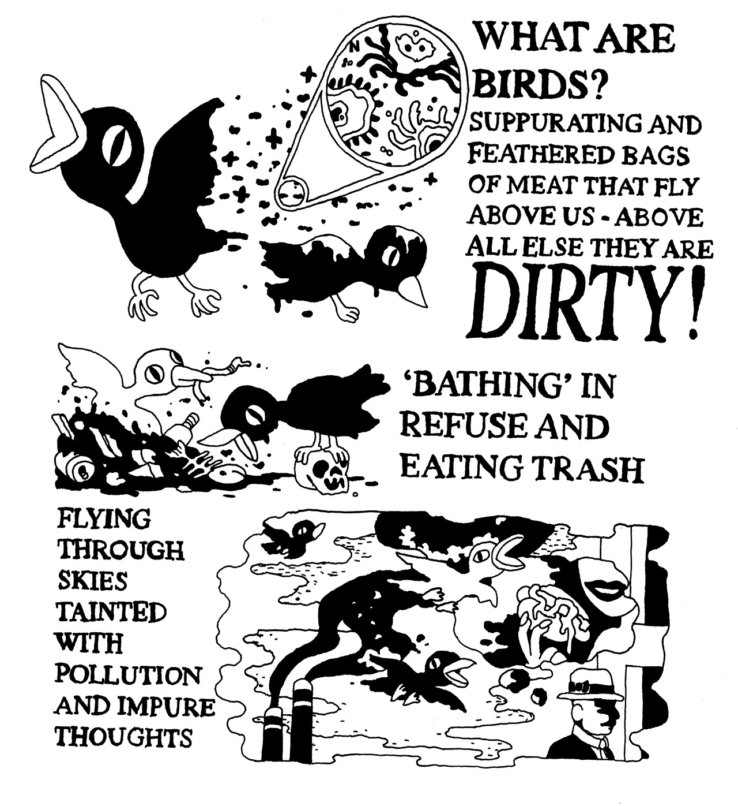
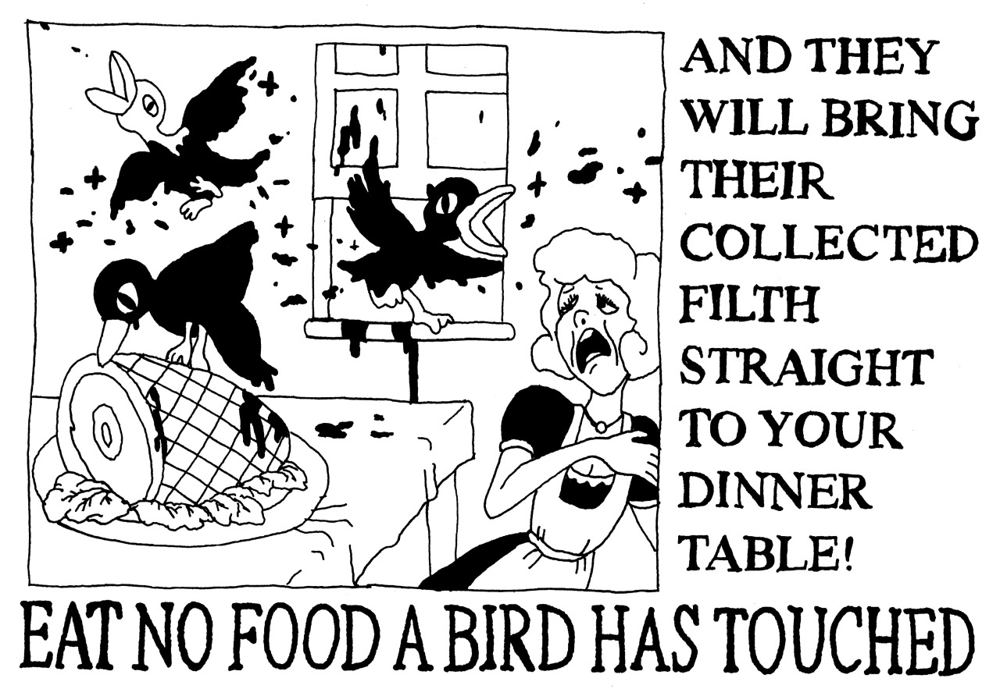
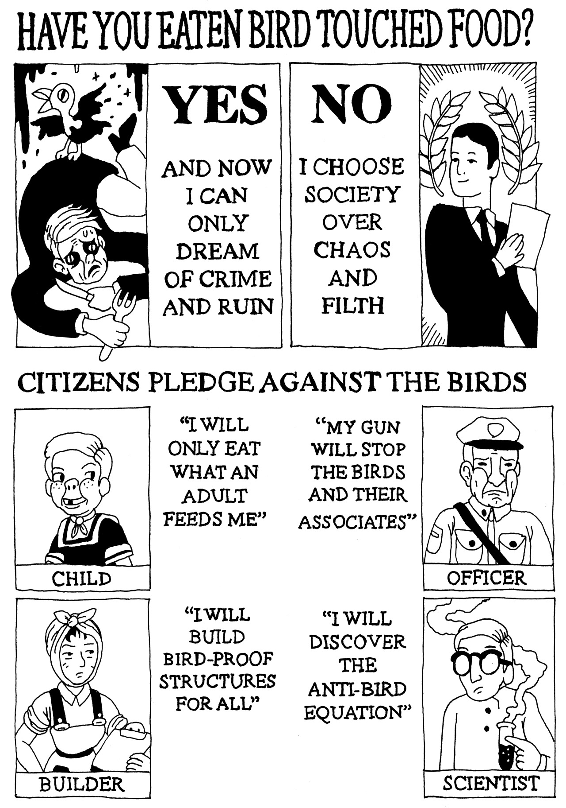
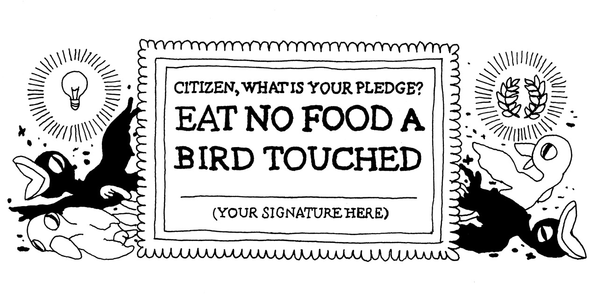
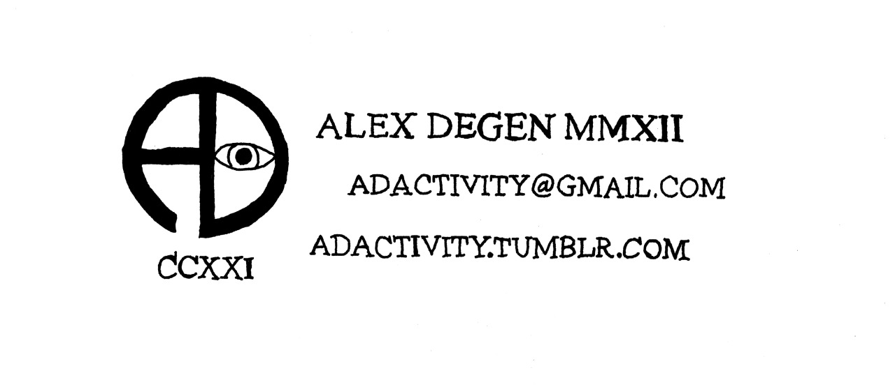

I wonder if the snow loves the trees and fields, that it kisses them so gently? And then it covers them up snug, you know, with a white quilt, and perhaps it says, "Go to sleep, darlings, till the summer comes again."
- Lewis Carroll
I've mentioned ritual before, but I think that's tied into the larger feeing of portentousness. Ritual is one way to sate that sense of intense meaning surrounding an act or an object.
A goose is dumb. A thousand geese
darkening the horizon is a portent. Mindless honking, individually
directionless, collectively unstoppable
— Makyo (@drab_makyo) February 12,
2014Any little thing can carry meaning for one person far outweighing what it might mean to others. Something about flocks of geese terrifies me. It's not a logical fear, it's a sense of foreboding. It's not the geese themselves, it's the concept of geese, the lack of any ritual to solve the problem of geese.
A goose is tasty. Geese taste
like horror. Acrid tang of ill omens *froth*
— Makyo
(@drab_makyo) February 12,
2014It's dumb. Geese are dumb. There's no reason I should feel any sort of emotion at all surrounding geese, but I do.
Why are geese so portentous? Why
do they cause anxiety? Did I take my meds this morning?
— Makyo
(@drab_makyo) February 12,
2014Ritual is like that. There is some level of meaning that's inexpressible except if you can find a way to come at it from the side. Use words like 'portent'. Describe it as an odor, a sense, a mystery. Ritual and sensation are wily and wary critters that want nothing less than to be identified, pointed out, made plain. You're supposed to just go along with the ritual and accept the portentous as fact.
Is this a thing for Imgur? Most certainly not! It's perfect for shouting into a vasty nothingness, though. It's just One Of Those Things. I'd say votes don't matter, since they don't, but Lord knows I'll be back to check on this at some point. If nothing else, maybe folks with similar experiences will have info, hopes, and thoughts to add.
This, er...human hygiene infopamphlet strongly evokes the sensation of the destabilization that comes along with going off of antipsychotics (see: http://imgur.com/a/vtulA ). There’s a certain type of magical, ritualistic thinking that comes with the (near-)psychosis of withdrawal. The kind that comes on you like a compulsion, or like your gag reflex being triggered, and makes you feel like your skin no longer fits.
For me, it’s frequently about birds. For a long while, it was geese. A goose is dumb. A thousand geese darkening the horizon is a portent. Mindless honking, individually directionless, collectively unstoppable. A goose is tasty. Geese taste like horror. Acrid tang of ill omens. Or so it felt at the time.
Then it was owls. It was my duty to think about owls, to encourage others to think about owls. In and of themselves, owls are alright, kind of a take-it-or-leave-it bird, but one must think about them, because the consequences of not thinking about them are beyond imagining. Or so it felt at the time.
And for a bit, it was incantations. “Get fucked,” I’d tell the clouds. I’d tell my thoughts to get fucked, I’d tell sleep to get fucked, I’d tell the tic to get fucked. I had to. I couldn’t not. Or so it felt at the time.
Birds and incantations, it turns out, are common in magical thinking and intrusive thoughts, as well as grids, parallel lines, and food. The comic is a prime example of that. There are aspects of OCD, sure, but it’s beyond just the obsessions and the compulsions, it’s the way that that is expressed in ritual and dire need, the fact that one cannot bear the consequences of NOT performing the ritual. There’s nothing wrong with ritual or magical thinking, nor even birds, incantations, grids, or food. The problem lies in when those are forced on you by your hindbrain until you’re sick.
A friend calls it ‘bruise vision’, and while I can’t explain why, that’s 100% accurate.
I couldn't create this sort of thing, so I'm glad that someone did for me. Here's the original source: http://adactivity.tumblr.com/post/73552347250/here-are-the-raw-images-which-make-up-the-eat-no - support artists doing neat things! And take care of yourselves :)